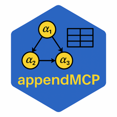
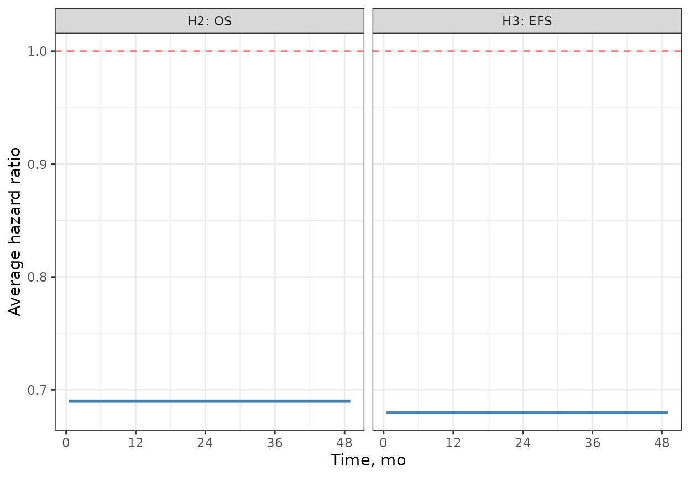
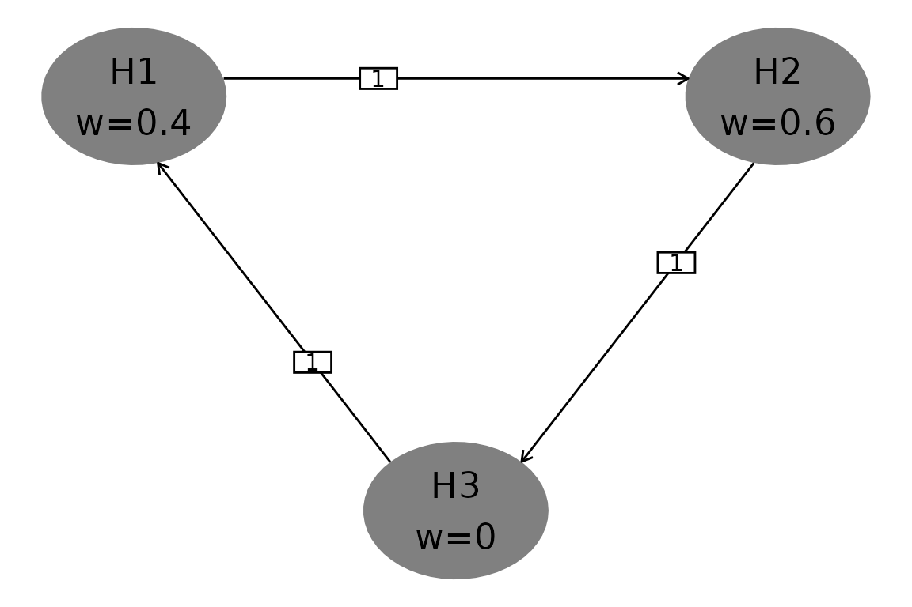
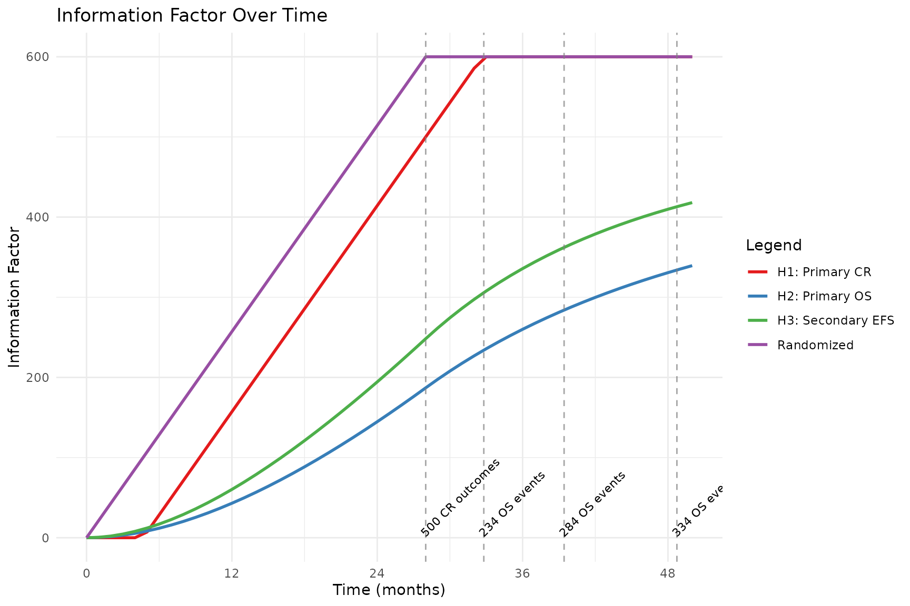
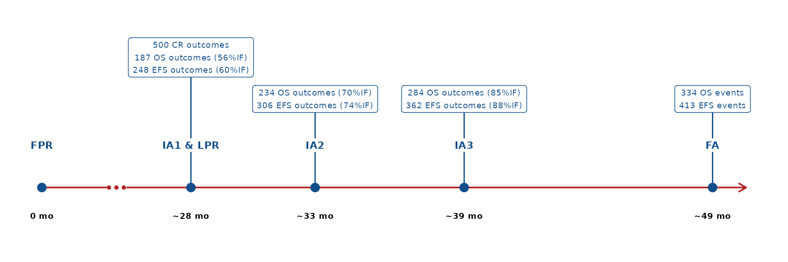
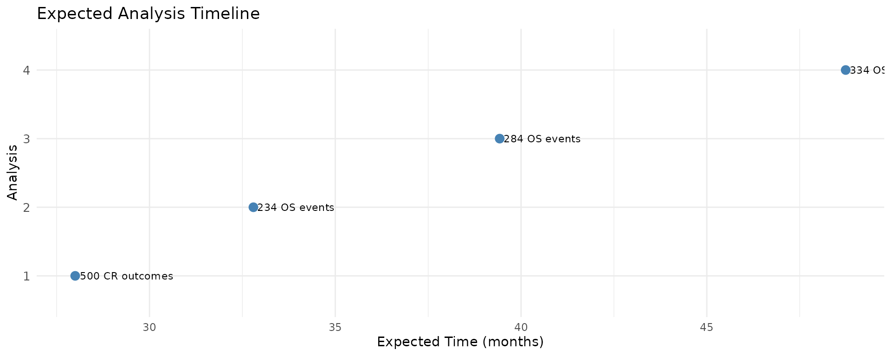
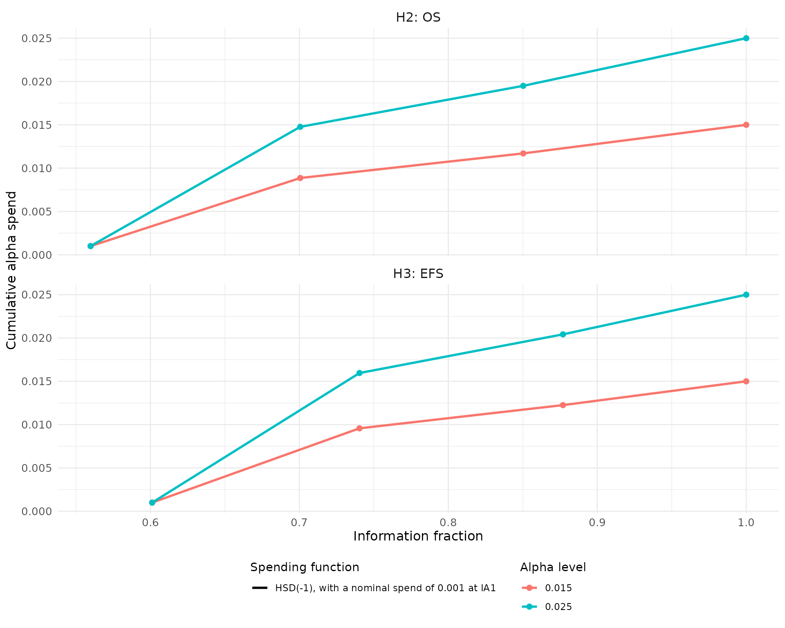

Example Study Report - Group Sequential Design with Multiple Testing
2026-08-13
example_study_report.RmdMultiplicity Adjustment
The multiplicity strategy follows the graphical approach for group sequential designs of Maurer and Bretz (2013) which provides strong control of type 1 error. The procedure takes into account both sources of multiplicity: multiple hypothesis tests (e.g., across primary and secondary endpoints) and multiple analyses planned for the study (i.e., interim and final analyses).
There are two key components that define this approach:
- Testing algorithm for multiple hypotheses specified by the graphical representation
- Repeated testing of some hypotheses using the alpha-spending function methodology
The multiplicity strategy will be applied to the 3 hypotheses across CR, OS, EFS endpoints. The following table summarizes the hypotheses specifying alpha-spending functions (for hypotheses to be tested group sequentially) together with the effect sizes and planned maximum statistical information (sample size or number of events).
Table 1. Summary of Primary and Key Secondary Hypotheses
| Label | Endpoint | Type | Initial weight | GSD spending fn | Effect size* | Maximum events / sample size |
| H1 | CR | Primary | 0.4 | N/A | Delta = 15% | 500 |
| H2 | OS | Primary | 0.6 | HSD(-1), with a nominal spend of 0.001 at IA1 | HR = 0.69 | 334 |
| H3 | EFS | Secondary | 0 | HSD(-1), with a nominal spend of 0.001 at IA1 | AHR = 0.68 | 413 |
| *For a hypothesis corresponding to a time-to-event variable subject to non-proportional hazards, the listed effect size is the average hazard ratio at the final analysis of this hypothesis. | ||||||
The overall type I family-wise error rate for 3 hypotheses, over all (interim and final) analyses, is controlled to 2.5% (one-sided).
Distribution Assumptions
Average Hazard Ratios

Figure 1 shows the graph where the hypotheses of interest are represented by the elliptical nodes. Each node has the hypothesis weight assigned to it (denoted by ). A particular value of sets the local significance level associated with that hypothesis (which is equal to 0.025 × ). The graphical approach allows local significance levels to be recycled (along arrows on the graph) when a given hypothesis is successful (i.e., the corresponding null hypothesis is rejected) at interim or final analyses.
Figure 1. Graph Depicting Multiple Hypothesis Testing Strategy

Interim Analyses
Table 2. Summary of Interim Analyses (by hypotheses)
| Analysis | Criteria for conduct | Events / sample size | Expected analysis time, mo | Information fraction, % |
| H1: CR | ||||
| 1 | 500 CR outcomes | 500 | 28.0 | 100.00% |
| H2: OS | ||||
| 1 | 500 CR outcomes | 187 | 28.0 | 55.98% |
| 2 | 234 OS events | 234 | 32.8 | 70.06% |
| 3 | 284 OS events | 284 | 39.4 | 85.03% |
| 4 | 334 OS events | 334 | 48.7 | 100.00% |
| H3: EFS | ||||
| 1 | 500 CR outcomes | 248 | 28.0 | 60.12% |
| 2 | 234 OS events | 306 | 32.8 | 74.04% |
| 3 | 284 OS events | 362 | 39.4 | 87.70% |
| 4 | 334 OS events | 413 | 48.7 | 100.00% |
Table 3. Summary of Interim Analyses (by calendar analysis)
| Hypothesis | Analysis | Events / sample size | Information fraction, % |
| 500 CR outcomes (Expected analysis time: 28.0 mo) | |||
| H1: CR | 1 | 500 | 100.00% |
| H2: OS | 1 | 187 | 55.98% |
| H3: EFS | 1 | 248 | 60.12% |
| 234 OS events (Expected analysis time: 32.8 mo) | |||
| H2: OS | 2 | 234 | 70.06% |
| H3: EFS | 2 | 306 | 74.04% |
| 284 OS events (Expected analysis time: 39.4 mo) | |||
| H2: OS | 3 | 284 | 85.03% |
| H3: EFS | 3 | 362 | 87.70% |
| 334 OS events (Expected analysis time: 48.7 mo) | |||
| H2: OS | 4 | 334 | 100.00% |
| H3: EFS | 4 | 413 | 100.00% |
Figure 2. Information Factor Over Time by Hypothesis

Figure 3. Anticipated study timeline

Figure 3b. Anticipated time of each analysis, with associated trigger

Hypothesis Testing
Table 4. Weight Allocation Scenarios
| Local alpha level | Weight | Testing scenario |
| H1: CR | ||
| 0.01000 | 0.4 | Initial allocation |
| 0.02500 | 1 | Successful H2, H3 |
| H2: OS | ||
| 0.01500 | 0.6 | Initial allocation |
| 0.02500 | 1 | Successful H1 |
| H3: EFS | ||
| 0.01500 | 0.6 | Successful H2 |
| 0.02500 | 1 | Successful H1, H2 |
Table 5. Boundary Specifications
Table 5 details the hypothesis testing at the interim and final analyses. For hypotheses tested group sequentially, the table provides the nominal p-value boundary derived from the alpha-spending function and the information fractions. The timing of analyses is expressed in terms of statistical information fractions. The table also reports local power at each analysis time.
| Analysis | Local alpha level | Nominal p-value | Exit hurdle | Local power | Information fraction, % |
| H1: CR | |||||
| 1 | 0.01000 | 0.01000 | 0.104 | 85.551% | 100.00% |
| 1 | 0.02500 | 0.02500 | 0.088 | 92.379% | 100.00% |
| H2: OS | |||||
| 1 | 0.01500 | 0.00100 | 0.636 | 29.006% | 55.98% |
| 2 | 0.01500 | 0.00876 | 0.733 | 67.903% | 70.06% |
| 3 | 0.01500 | 0.00717 | 0.748 | 78.042% | 85.03% |
| 4 | 0.01500 | 0.00848 | 0.770 | 86.457% | 100.00% |
| 1 | 0.02500 | 0.00100 | 0.636 | 29.006% | 55.98% |
| 2 | 0.02500 | 0.01472 | 0.752 | 74.581% | 70.06% |
| 3 | 0.02500 | 0.01251 | 0.766 | 83.649% | 85.03% |
| 4 | 0.02500 | 0.01493 | 0.788 | 90.600% | 100.00% |
| H3: EFS | |||||
| 1 | 0.01500 | 0.00100 | 0.676 | 47.933% | 60.12% |
| 2 | 0.01500 | 0.00950 | 0.765 | 84.800% | 74.04% |
| 3 | 0.01500 | 0.00753 | 0.775 | 90.837% | 87.70% |
| 4 | 0.01500 | 0.00832 | 0.790 | 94.775% | 100.00% |
| 1 | 0.02500 | 0.00100 | 0.676 | 47.933% | 60.12% |
| 2 | 0.02500 | 0.01593 | 0.782 | 88.990% | 74.04% |
| 3 | 0.02500 | 0.01314 | 0.792 | 93.805% | 87.70% |
| 4 | 0.02500 | 0.01468 | 0.807 | 96.704% | 100.00% |
Table 6a. Operating Characteristics at Each Analysis
| Analysis | Metric | Hypothesis subset | Probability, % |
| 1 | Power | H1 | 87.500% |
| H2 | 29.000% | ||
| H3 | 14.300% | ||
| Probability of success for at least one Hi | H1, H2 | 90.700% | |
| H1, H2, H3 | 90.700% | ||
| Probability of success for all Hi | H1, H2, H3 | 13.300% | |
| 2 | Power | H1 | 89.900% |
| H2 | 74.200% | ||
| H3 | 66.300% | ||
| Probability of success for at least one Hi | H1, H2 | 95.600% | |
| H1, H2, H3 | 95.600% | ||
| Probability of success for all Hi | H1, H2, H3 | 62.200% | |
| 3 | Power | H1 | 90.700% |
| H2 | 84.200% | ||
| H3 | 78.800% | ||
| Probability of success for at least one Hi | H1, H2 | 96.900% | |
| H1, H2, H3 | 96.900% | ||
| Probability of success for all Hi | H1, H2, H3 | 73.600% | |
| 4 | Power | H1 | 91.900% |
| H2 | 91.000% | ||
| H3 | 87.400% | ||
| Probability of success for at least one Hi | H1, H2 | 98.600% | |
| H1, H2, H3 | 98.600% | ||
| Probability of success for all Hi | H1, H2, H3 | 81.200% |
Table 6b. Operating Characteristics Across Analyses
| Metric | Hypothesis subset | Value |
| Expected Success Analysis | H1 | 1.08 |
| H2 | 1.94 | |
| H3 | 2.18 | |
| Expected Success Analysis (at least one Hi) | H1, H2 | 1.13 |
| H1, H2, H3 | 1.13 | |
| Expected Success Analysis (for all Hi) | H1, H2, H3 | 2.16 |
| Expected Success Time | H1 | 28.5 |
| H2 | 33.2 | |
| H3 | 34.5 | |
| Expected Success Time (at least one Hi) | H1, H2 | 28.7 |
| H1, H2, H3 | 28.7 | |
| Expected Success Time (for all Hi) | H1, H2, H3 | 34.4 |
Figure 4. Alpha-spending functions

Configuration Details
Enrollment Assumptions
Table 8. Enrollment Rate Assumptions
| stratum | treatments | rate | duration | ratio |
|---|---|---|---|---|
| Type_A | PBO, TRT | 17.14 | 28 | 1, 1 |
| Type_B | PBO, TRT | 4.29 | 28 | 1, 1 |
Binary Endpoint Assumptions
Table 9. Binary Endpoint Parameters
| endpoint | stratum | treatment | rate | maturity_time |
|---|---|---|---|---|
| CR | Type_A | PBO | 0.50 | 4.667 |
| CR | Type_B | PBO | 0.40 | 4.667 |
| CR | Type_A | TRT | 0.65 | 4.667 |
| CR | Type_B | TRT | 0.55 | 4.667 |
Time-to-Event Endpoint Assumptions
Table 10. Time-to-Event Distribution Parameters
| endpoint | stratum | treatment | duration | fail_rate | dropout_rate |
|---|---|---|---|---|---|
| EFS | Type_A | PBO | Inf | 0.0462 | 0.0088 |
| EFS | Type_B | PBO | Inf | 0.1172 | 0.0088 |
| EFS | Type_A | TRT | Inf | 0.0314 | 0.0088 |
| EFS | Type_B | TRT | Inf | 0.0797 | 0.0088 |
| OS | Type_A | PBO | Inf | 0.0289 | 0.0088 |
| OS | Type_B | PBO | Inf | 0.0866 | 0.0088 |
| OS | Type_A | TRT | Inf | 0.0199 | 0.0088 |
| OS | Type_B | TRT | Inf | 0.0598 | 0.0088 |